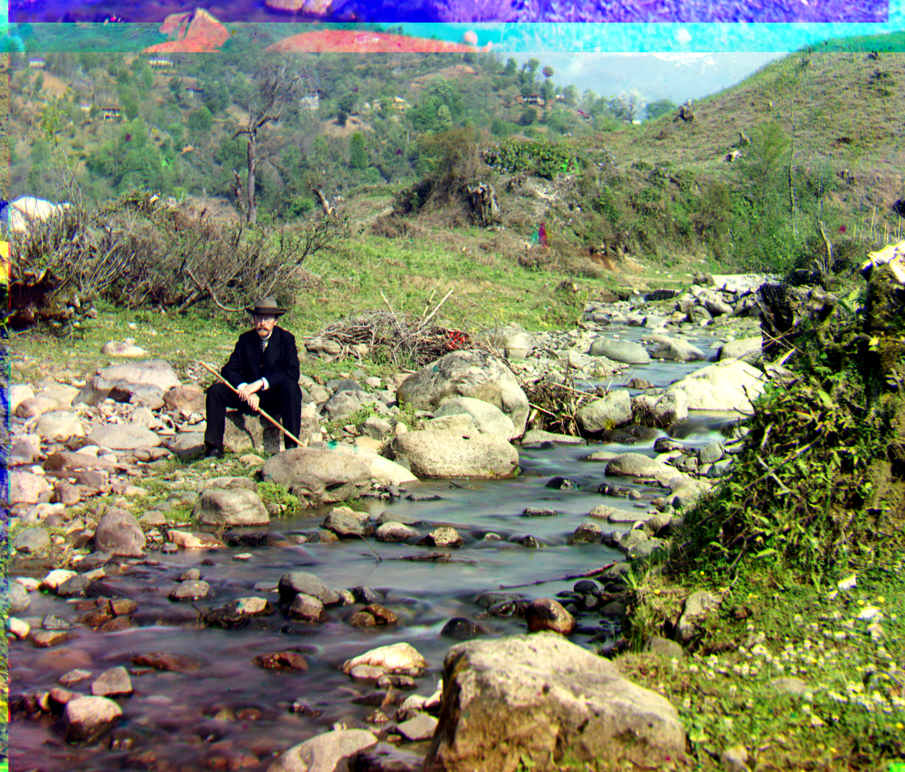

Self-Portrait
Auto-Contrast
Green Offset: (28, 76), Red Offset: (36, 176)

White-Balancing and Auto-Contrast
Green Offset: (28, 76), Red Offset: (36, 176)
Sergei Mikhailovich Prokudin-Gorskii (1863-1944) was a photographer who saw the potential of color photography in the early 1900s, before its popularity and use rose drastically. To pursue his ambitions of color photography, he was granted permission by the Russian Tsar to travel across the Russian Empire and take color photographs. He wanted to take the scenes in using three different filters on glass plates: red, green, and blue, which he believed could be later put together to create color photographs of those times. Unfortunately, he was not able to combine those RGB scenes because of political unrest at the time in Russia. Luckily, the US Library of Congress acquired these plates in 1948, which have recently been digitized and put up on their website. During this project, I will use image processing techniques to transform these RGB scenes into aligned color images. The process involves extracting and aligning the three color channels to create a quality RGB image, while also adding contrasting and white-balancing.
We start by processing the images (dividing the image into 3 separate channels: red, green, blue). We align the green and red channels to the blue channel. The way this is done during single-scale alignment is each of the red and green channels are shifted through a search window and aligned with the blue channel, using a metric to score the alignment. The two metrics I tested out were SSD and NCC, and SSD both performed better and was a faster implementation, so I decided to use this metric for both the Single-Scale alignment as well as the other algorithms later on in this project. Once the best alignments are found for the red and green channels, the three channels are stacked to create the aligned RGB image. Below are three examples of this alignment. The offset is (x, y).
Green Offset: (0, -6), Red Offset: (1, 9)
Green Offset: (-1, 1), Red Offset: (-1, 7)
Green Offset: (2, 3), Red Offset: (3, 6)
The single-scale alignment is decent on smaller size images, but is very slow on larger images (like .tif) images. To solve this problem, we implement a pyramid to speed the alignment process up. The process involves creating a pyramid, where each level is scaled down by a half compared to the previous level. Each level is aligned, and then once the alignment is done, it is used to help align the next level. This drastically optimizes the alignment process. I have implemented 5 levels in my pyramid. I have also added two built-in functions, an edge detection function and cropping the image before aligning. In terms of cropping, I manually cropped 10% off of the top and sides of each image, which allows for the algorithm to not have to worry about the black borders affecting alignment in the original image. In terms of edge detection, I used canny edge detection, which smooths the image using a Gaussian filter, calculates the intensity of the gradient using Sobel Filters, which informs the strength of edges. This allows for better feature extraction and image alignment. The results are shown on two images below. The offset is (x, y).
Green Offset: (12, 56), Red Offset: (12, 120)
Green Offset: (16, 40), Red Offset: (24, 92)
In this project, I worked on two enhancements: Auto-Contrast and White-Balancing. Auto-Contrast is used to enhance the image by improving the overall contrast of the images, which is done by adjusting brightness and contrast levels. I used the second and ninety-eighth percentile of pixel intensities to use as my bounds for contrast within the image. Then, I normalized the pixel values throughout the using the upper and lower bounds to create better contrast in the image. The white-balancing adjusts the colors of the image so that images that should be white are white in the image despite the illumination in the image. In my white-balancing algorithm, using the average intensities across the three color channels, I adjusted each channel's intensity with a algorithmic scaling factor, which helps white-balance the image. Each image is shown below with just auto-contrast and with white-balancing and auto-contrast. The offset is (x, y). There is slight ghosting with the harvesters and three generations image, but not much and all the images are well-aligned.
Green Offset: (4, 24), Red Offset: (-4, 60)
Green Offset: (4, 24), Red Offset: (-4, 60)
Green Offset: (24, 48), Red Offset: (44, 108)
Green Offset: (24, 48), Red Offset: (40, 108)
Green Offset: (16, 60), Red Offset: (12, 124)
Green Offset: (16, 60), Red Offset: (12, 128)
Green Offset: (16, 40), Red Offset: (24, 92)
Green Offset: (16, 40), Red Offset: (24, 88)
Green Offset: (12, 56), Red Offset: (12, 120)
Green Offset: (8, 52), Red Offset: (12, 120)
Green Offset: (12, 80), Red Offset: (12, 176)
Green Offset: (12, 80), Red Offset: (12, 176)
Green Offset: (24, 52), Red Offset: (40, 108)
Green Offset: (24, 52), Red Offset: (40, 108)
Green Offset: (-12, 32), Red Offset: (-28, 140)
Green Offset: (-12, 32), Red Offset: (-28, 140)
Green Offset: (28, 76), Red Offset: (36, 176)
Green Offset: (28, 76), Red Offset: (36, 176)
Green Offset: (12, 56), Red Offset: (8, 112)
Green Offset: (12, 56), Red Offset: (8, 112)
Green Offset: (8, 40), Red Offset: (28, 84)
Green Offset: (8, 40), Red Offset: (28, 84)